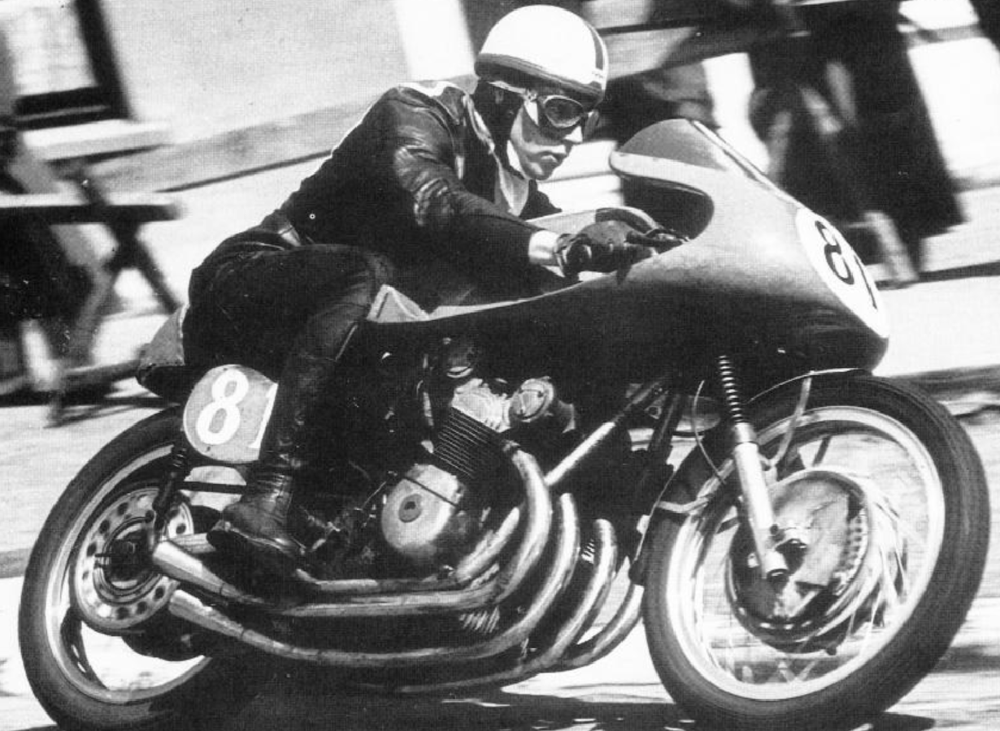

Los 30 mejores pilotos de Fórmula 1 de la historia
Desde Fangio hasta Verstappen, pasando por leyendas como Lauda y Senna. Car and Driver te presenta la lista de los 30 mejores pilotos de la historia de la F1.
Publicado por Nathaly R. Marquez Colmenarez.- 30 curiosidades de la Fórmula 1 que tal vez no conocías
- Los 10 accidentes de Fórmula 1 más impactantes de la historia
- Los 10 mejores circuitos de Fórmula 1 del mundo
La historia de la Fórmula 1 ha atravesado muchísimos momentos. Desde su fundación oficial en 1950, diversos pilotos han marcado décadas y generaciones marcadas por la brillantez, el talento innato, la velocidad y el triunfo. Incluso antes de la creación de la categoría, existieron héroes, como es el caso de Tazio Nuvolari. Y es que cada época ha sido distinta, de ahí la inmensa dificultad para comparar una era con otra. El pasado y el presente son tremendamente diferentes. No hay color, literalmente, en referencia a la época en la que las carreras ni siquiera podían recibir la cobertura televisiva que hoy sí gozamos.
Los gentleman drivers del pasado compartieron el asfalto con auténticos pilotazos que hoy, por su valentía y sus heroicidades a bordo de tumbas con cuatro ruedas, son recordados como grandes iconos del deporte. En el pasado no existían las dietas, ni los gimnasios, ni mucho menos las avanzadas tecnologías de la actualidad que priorizan una buena máquina frente a las manos del piloto. En lugar de ello, primaban los puros, las agallas, las fatalidades y, sobre todo, la intuición.
Conforme avanzaron los tiempos, los Fórmula 1 se fueron perfeccionando y los pilotos se tuvieron que adaptar a las nuevas exigencias físicas y mecánicas. La suerte que ha tenido este deporte es que, en cada generación, han brillado dos, tres o cuatro pilotos como mínimo. Algunos con mejores prestaciones que otros, por lo que sus números han sido inflados hasta el punto de convertirse en unos nombres legendarios.
Por contrapartida, aquellos que nunca disfrutaron de tener un coche competitivo, se fueron olvidando para la memoria colectiva, a pesar de su ingenio y de sus habilidades al volante. Pero en este artículo también hemos querido premiar el talento y colocarlo a la altura del resultadismo que tantas veces ha distorsionado la realidad a la hora de evaluar quién es mejor o peor piloto.
Y es que la influencia de la máquina siempre ha sido fundamental, pero en Car and Driver hemos sabido valorar más allá de las prestaciones de los bólidos de carreras y hemos analizado los que, a nuestro parecer, consideramos los 30 mejores pilotos de Fórmula 1 de la historia, desde 1950 hasta la actualidad y repasando todas las décadas. Porque las historias de Ascari, Clark, Stewart, Villeneuve, Alesi, Button y Alonso, entre otros muchísimos nombres, también merecen ser contadas.
1
Ayrton Senna
Ayrton Senna da Silva es un emblema, ya no solo del automovilismo, sino de la historia del deporte. La leyenda brasileña, idolatrada tanto en su país como en todos los rincones del planeta, elevó la Fórmula 1 a la cúspide de la popularidad entre los años 80 y 90. Sus 11 temporadas fueron magníficas, desde sus inicios sorprendentes con Toleman en 1984, pasando por Lotus y llegando a la gloria con McLaren-Honda, hasta poner fin a su trayectoria automovilística con Williams y su desafortunado accidente mortal en el GP de San Marino de 1994. Para el recuerdo quedarán sus duelos al límite con Alain Prost, sus recitales mágicos en las calles de Montecarlo y, por supuesto, su legado infinito. Cualquier persona que le vio correr fue consciente de que Senna era una estrella y de que sus tres Mundiales nunca fueron suficientes para estimar su valor incalculable. Después de su fallecimiento en Imola, Ayrton ha servido de inspiración a decenas de generaciones, llegando a su punto más álgido con el reinado de Lewis Hamilton, que hegemonizó la Fórmula 1 con los colores de Senna en su casco.
2
Juan Manuel Fangio
El astro del automovilismo argentino marcó la era de los años 50. Fangio fue la demostración perfecta de la polivalencia, y es que obtuvo cinco Mundiales con cuatro marcas diferentes: Alfa Romeo, Mercedes, Ferrari y Maserati. Sus habilidades con distintas máquinas han permitido que sea valorado por diferentes estudios como el mejor piloto de la historia, aun teniendo en cuenta que el estado argentino siempre velaba para que Fangio compitiese con el mejor bólido año tras año. Habiendo pasado casi siete décadas de su pentacampeonato, el de Balcarce sigue siendo el tercer piloto más laureado de la historia de la F1, tan solo superado por Lewis Hamilton y Michael Schumacher.
3
Jim Clark
El mejor piloto escocés de la historia fue la mayor prueba de fidelidad que se recuerda en la Fórmula 1. Clark siempre corrió para los colores verde y amarillo de Lotus, equipo con el que destacó y brilló en la década de los 60. Su inteligencia y delicadeza a la hora de pilotar le llevó a alcanzar dos Mundiales y 25 victorias con un Lotus que no siempre fue el más competitivo. Pero el antiguo granjero, que nunca renunció a sus ovejas y que, para él, las carreras eran el hobby del fin de semana, poseía la cualidad de ser rápido con cualquier hierro. Clark, el gran caballero de la F1 que incluso conquistó las 500 Millas de Indianápolis, marcó toda una década. Su fallecimiento fue prematuro, al igual que el de Senna. Por lo que, probablemente, el palmarés del escocés habría sido más amplio de lo que ya fue de por sí.
4
Alain Prost
"El Profesor" también destacó por ganar carreras con cuatro escuderías diferentes: Renault, McLaren, Ferrari y Williams. Prost dominó gran parte de la década de los 80, obteniendo sus cuatro títulos desde 1985 hasta 1993. El francés siempre plantó cara a todos sus compañeros de equipo, algunos de ellos campeones del mundo: Lauda, Hill, Rosberg, Mansell y Senna. Frío, calculador, preciso e inteligente, sacó de quicio en más de una ocasión a Ayrton, tanto en McLaren-Honda como años después cuando Alain fichó por Ferrari. Suzuka siempre les separó. Pero, cuando Prost se retiró a lo grande, proclamándose tetracampeón en 1993, el respeto y la admiración entre ambas leyendas de la F1 alcanzó un nivel máximo hasta el fallecimiento del brasileño a comienzos de la temporada siguiente.
5
Michael Schumacher
Considerado por muchos como el mejor corredor de todos los tiempos, fue el piloto más laureado de la historia junto a Lewis Hamilton con 7 títulos y se convirtió en la figura más influyente de la historia de Ferrari. Michael despertó la pasión de los tifosi en todo el mundo y levantó a una Ferrari en reconstrucción. Ya en sus comienzos, brilló con Jordan y logró sus primeros Mundiales con Benetton. Su fichaje arriesgado por la formación de Maranello se convirtió en un acierto absoluto, dominando la década de los 2000 con 5 campeonatos consecutivos hasta el auge de Fernando Alonso. Schumacher lideró la época dorada de Ferrari con un monoplaza pletórico y dominante. Su regreso a la F1 en 2010 con Mercedes se prolongó hasta 2012. Su compañero, Nico Rosberg, le venció en aquellas temporadas hasta la retirada definitiva del "Káiser".
6
Jackie Stewart

Algunos expertos le colocan como el mejor piloto de la historia, por delante de los Schumacher, Senna, Prost, Fangio y Clark. Este último, precisamente, compartió tanto la nacionalidad como el asfalto con Jackie durante algunos años a mediados de los 60. Stewart fue capaz de ganar 3 campeonatos con coches que, a priori, no eran potenciales ganadores. Demostró su valía con Matra en 1969 y posteriormente con Tyrrell en 1971 y 1973 respectivamente. Sus presiones para convertir la Fórmula 1 en un deporte más seguro supusieron la integración de cascos integrales, la implementación de monos ignífugos, la evolución de los circuitos y la mejora de la atención médica en cada Gran Premio. Su pasión por las carreras le hizo crear su propio equipo, Stewart Grand Prix, logrando una dinámica ascendente entre 1997 y 1999, hasta que Jaguar compró la estructura
7
Fernando Alonso
El mejor piloto español de la historia del automovilismo tiene menos títulos de los que se merece, y es que sus dos Mundiales no hacen justicia a su talento. En contadas ocasiones, Alonso ha pilotado el mejor coche de la parrilla. Probablemente, tan solo a mediados de los 2000. Fernando alcanzó la gloria en 2005 y en 2006, obteniendo ambos campeonatos en Brasil. Quienes le han visto correr a lo largo de su trayectoria en la F1, aseguran que sus mejores años fueron con Ferrari (2010-2014), especialmente la temporada 2012. El asturiano estuvo a punto de vencer al todopoderoso Red Bull de Sebastian Vettel con un Ferrari bastante inferior en una de las mejores actuaciones individuales que se recuerdan en la historia reciente del automovilismo. Posteriormente, sus malas decisiones le hicieron correr con máquinas menos competitivas hasta forzar su retirada en 2018. El bicampeón probó suerte en otras competiciones como el Dakar, la IndyCar y el Mundial de Resistencia. En esta época, consiguió ganar en dos ocasiones las 24 Horas de Le Mans y se proclamó campeón del WEC con Toyota. Alonso regresó a la F1 en 2021 gracias a Alpine y todavía continúa en activo, a pesar de su debut en 2001. En la actualidad está viviendo una segunda juventud gracias a Aston Martin y se ha convertido en el piloto con más carreras de la historia de la F1. Pura experiencia, veteranía, inteligencia y talento.
8
Max Verstappen
Su historia aún se está escribiendo en el presente, pero es innegable que el nombre de Max ya debe colarse en los libros de los mejores pilotos. La Fórmula 1 se inventó la regla de los 18 años y de la Superlicencia debido a que Verstappen debutó en la F1 siendo menor de edad con Toro Rosso, después de comerse el mundo en la época del karting. Un año después, subió a Red Bull y se convirtió en el ganador más joven de la historia. Desde 2019, ha sido capaz de plantar cara a rivales que poseían prestaciones superiores y, en 2021, alcanzó su primer título Mundial, poniendo fin a la hegemonía de Lewis Hamilton en la F1. El neerlandés volador aún es muy joven, pero ya acumula unos números de leyenda. Seguramente, su palmarés siga creciendo en las siguientes temporadas.
9
Lewis Hamilton
Hamilton es el piloto con más victorias y más poles en la historia de la Fórmula 1, alcanzando el centenar en ambos casos. El inglés ha roto cualquier estadística en el deporte. Tan solo le falta superar un récord: el número de Mundiales. Actualmente, acumula 7, al igual que Michael Schumacher. Su talento es innegable, pero hay que contarlo todo. Es el máximo beneficiado de la hibridación de la F1. Desde 2014, ha competido con el mejor monoplaza de la parrilla y ha ganado todos los Mundiales desde entonces, salvo la excepción de 2016 (Nico Rosberg) y 2021 (Max Verstappen). En la era de los V8 atmosféricos, Hamilton igualó en puntos a Alonso en su debut con McLaren en 2007 y venció en sus rivalidades particulares a Kovalainen y a Button. Aunque Jenson le superó en 2011 en un año en el que Lewis acabó desquiciado por Felipe Massa. Precisamente, fue al brasileño a quien le quitó el título en 2008 en Interlagos, obteniendo uno de los campeonatos más épicos de la historia. Hamilton sigue acumulando éxitos en la actualidad.
10
Niki Lauda
Lauda es el mayor ejemplo de superación que leerás en este artículo. Niki es considerado el primer piloto moderno de la Fórmula 1. Su inteligencia y su régimen de entrenamiento contrastaba con la pasividad de los gentleman drivers. El piloto austríaco poseía un talento descomunal, aunque tenía un don mayor: el arte de entender la ingeniería. Sus dotes como configurador levantaron a Ferrari en la década de los 70, llegando a obtener dos títulos con los italianos. Su accidente espeluznante en Nürburgring en el año 1976 casi le hizo perder la vida. Sus quemaduras faciales le marcaron para siempre y, desde entonces, fue reconocido por su característica gorra roja. Ese mismo año regresó, aunque el Mundial se decantó de manera heroica a favor de James Hunt. Un lustro después, el aviador Lauda fichó por McLaren y consiguió el tricampeonato en la temporada 1983, imponiéndose por medio punto sobre su compañero Alain Prost. Un año más tarde se retiró de la Fórmula 1. Su cargo más reciente fue el de consultor de Mercedes hasta su fallecimiento en 2019, dejando un legado de grandes magnitudes.
11
Sebastian Vettel
La imagen de Sebastian Vettel arrodillado ante el RB9 después de lograr su cuarto título mundial consecutivo de manera matemática lo define todo. El alemán arrolló desde 2010 hasta 2013. Especialmente, en los años impares. La combinación Vettel - Red Bull era perfecta, hasta la llegada de la hibridación en 2014. Un año más tarde, el tetracampeón del mundo fichó por el equipo de sus sueños, Ferrari. Sin embargo, se marchó de la Scuderia como Fernando Alonso: frustrado por no haber podido conseguir un título vestido de rojo. Su última etapa en la F1 la compartió con Aston Martin, aunque el mal rendimiento del monoplaza británico precipitó la retirada de toda una leyenda del automovilismo en 2022.
12
Emerson Fittipaldi
Brasil ha dado muchas alegrías a la Fórmula 1 y una de ellas es la de Emmo. El astro brasileño fue un emblema durante la década de los 70, ganando los títulos de 1972 y 1974 con Lotus y McLaren respectivamente. El bicampeón de F1 también brilló en Estados Unidos: Emerson ganó la CART en 1989. En ese mismo año se proclamó campeón de las 500 Millas con el chasis Penske. En 1993 repetiría el triunfo. Su famosa frase "A dónde vas, ¿Fittipaldi?" empleada en España se debe a una referencia suya, ya que por aquel entonces Fittipaldi se popularizó en la Península Ibérica por su carisma, pero, especialmente, por su velocidad. La herencia de Emerson es infinita. Sus nietos Pietro y Enzo están vinculados al automovilismo. El primero llegó a disputar dos carreras en 2020 y es el piloto reserva de Haas.
13
Stirling Moss
El gran campeón de los no campeones. Moss se retiró de la Fórmula 1 sin ningún Mundial, pero con cuatro subcampeonatos consecutivos y tres terceros puestos seguidos en la clasificación final. La leyenda británica sigue siendo el único piloto en haber logrado vencer con cinco marcas diferentes en, al menos, una carrera: Cooper, Mercedes, Maserati, Lotus y Vanwall. Además, fue el gran rival de Juan Manuel Fangio, con el que compartió una amistad envidiable. Moss sobrevivió a la peligrosísima década de los 50 y vivió para contar sus hazañas. Su última gran aparición pública relacionada con el automovilismo fue en Silverstone junto con Lewis Hamilton en un acto promocional de Mercedes durante la temporada 2013. Moss falleció en 2020 a los 90 años de edad, dejando un legado inmenso para las siguientes generaciones. Y es que, contradiciendo a las palabras de Senna, quedar segundo no te hacer ser el primero de los perdedores. Al menos, así fue en el caso de Moss.
14
Nelson Piquet
Piquet es el tercer brasileño que se cuela en nuestra lista de los 30 mejores pilotos de la historia. Nelson era rápido... Y su boca más rápida aún. Tan pronto te conseguía tres Mundiales en la época de los 80 (2 con Brabham y 1 con Williams), como se peleaba en la pista con otros rivales, llamaba a Senna homosexual e invitaba a mujeres desnudas a eventos de motor. Sus pasadas de frenada extradeportivas no deben eclipsar sus logros en el asfalto. Piquet fue, junto a Prost, el dominador de la década de los 80. Su hijo, Nelsinho Piquet, también llegó a la Fórmula 1. Pero el famoso crashgate de Singapur 2008 y su mal rendimiento con Renault le hizo abandonar la categoría a mediados del año siguiente.
15
John Surtees

No es una equivocación que una motocicleta aparezca en la imagen. Es John Surtees, el único ganador del Mundial de Motociclismo y de Fórmula 1 al mismo tiempo. El piloto británico sumó siete títulos mundiales en el mundo de las dos ruedas, sumando las cilindradas de 350cc y 500cc entre 1956 y 1960. Por aquel entonces, era común competir en varias categorías a la vez. Lo que era menos frecuente era pasarse del mundo de las motos al de los coches. Y, encima, triunfar en sendas modalidades. Surtees compitió en la F1 desde 1960 hasta 1972 y ganó el título en 1964 con Ferrari. Vaya equipo para hacerlo. John también ganó el TT Isla de Man hasta en seis ocasiones. Su hijo, Henry, desgraciadamente perdió la vida al impactarle una rueda desprendida de otro rival accidentado en el casco durante una prueba de Fórmula 2 en Brands Hatch, durante la temporada 2009. Su padre, John, falleció en 2017 a los 83 años de edad. Es impensable que alguien vaya a igualar su peculiar hazaña en el futuro.
16
Gilles Villeneuve
Gilles fue uno de los mejores. Sin embargo, nunca obtuvo un título. Villeneuve es conocido también por ser el gran campeón sin corona de la Fórmula 1, con el permiso de Stirling Moss. Para los tifosi fue una leyenda. Lo mismo opinan quienes le vieron correr, al igual que los rivales que le sufrieron en la pista. Villeneuve y Ferrari protagonizaron un romance que nunca se consumó con el casamiento final. Su trágica muerte a la temprana edad de 32 años durante las prácticas celebradas en el circuito de Zolder en 1982 conmocionó al Gran Circo. Gilles era capaz de dominar una máquina italiana carente de rendimiento, lo cual agrandó su figura. El subcampeonato de 1979 supo a poco, conociendo cuál fue su desenlace. Por suerte, su hijo Jacques pudo honrar el apellido Villeneuve en 1997, aunque pocos son los que se atreven a decir que el hijo fue mejor que el progenitor. El circuito de Montreal se llama Gilles Villeneuve en honor al eterno 27, su dorsal mítico junto al 12.
17
Jack Brabham
Jack Brabham fue un pionero. El piloto australiano marcó una era desde finales de los años 50 hasta su retirada en 1970 y fue el primer piloto en salir campeón con la arquitectura de motor central gracias a la visión de John Cooper, que permitió a Black Jack conseguir el bicampeonato en las temporadas 1959 y 1960. Su particular peculiaridad fue la de fundar su propio equipo y convertirse en el piloto titular del mismo. El emprendedor Jack alcanzó el tricampeonato en 1966 con Brabham Racing Organisation. Su trayectoria como piloto finalizó una década más tarde, pero su chasis Brabham estuvo presente en la F1 por muchas más décadas. Concretamente, hasta 1992 y con dos campeonatos de constructores en su haber.
18
Alberto Ascari
El milanés fue el segundo y último piloto italiano en ganar un Mundial de Fórmula 1. Se le adelantó Giuseppe Farina, el primer campeón de la historia de la F1. Ascari fue bicampeón en los años 1952 y 1953 y tuvo el honor de ser el primer hombre en llevar a Ferrari a la gloria desde que se fundase la competición de manera oficial en 1950. Rivalizó con Juan Manuel Fangio. Desgraciadamente, su trayectoria en el Gran Circo fue breve. Alberto falleció en 1955 mientras completaba unas pruebas en Monza. El italiano se accidentó después de superar la curva que hoy porta su nombre: Ascari. Cuatro días antes, se había sumergido en el puerto de Montecarlo durante el Gran Premio de Mónaco.
19
Mario Andretti
Estamos hablando, probablemente, del piloto estadounidense más influyente de la historia, aunque con descendencia italiana. Andretti, junto a Ickx, destacó por ser rápido en cualquier superficie al manejo de cualquier bólido de carreras. Sus mayores éxitos llegaron con Lotus, obteniendo el Mundial de Fórmula 1 en el año 1978. Con el paso de las temporadas, el monoplaza de Colin Chapman cedió ante los avances tecnológicos de la competencia y Andretti se fue diluyendo en la categoría. Pero dejó huella en las Américas con las 500 Millas de Indianápolis obtenidas en 1969, las 500 Millas de Daytona del año 1967 y un título de la CART norteamericana, además de ser el ganador de la clase WSC en las 24 Horas de Le Mans de 1995. Su capacidad para dominar en cualquier disciplina le convirtió en un piloto emblemático en Estados Unidos y también gozó de un prestigio internacional. Sus más de tres décadas compitiendo al máximo nivel (desde los 60 hasta finales de los 90) le otorgan el valor que se merece y su familia ha mantenido el apellido Andretti ligado al automovilismo hasta la actualidad.
20
Jacky Ickx
Jacques Bernard Ickx fue un piloto todoterreno. No logró ningún Mundial en la Fórmula 1, a pesar de sus dos subcampeonatos con Brabham y con Ferrari respectivamente. Sin embargo, su talento era innato y lo demostró en multitud de categorías. El belga destacó en la Fórmula 2, siendo incluso más rápido que los F1 en más de un Gran Premio. Además, su popularidad aumentó gracias a sus múltiples éxitos en distintas categorías: dominó la Resistencia con seis victorias en las 24 Horas de Le Mans y llegó, incluso, a ganar el Dakar en 1983 con el Mercedes 280 G. Su vinculación más exitosa fue con la marca Porsche y su polivalencia durante más de 15 años le hizo convertirse en uno de los mejores pilotos del mundo en aquella época, más allá de su extenso palmarés en la F1.
21
Graham Hill
Norman Graham Hill supo escoger bien en qué equipos correr. Acertó con BRM y más adelante con Lotus, obteniendo así dos coronas en la Fórmula 1 en 1962 y 1968. Además, se ganó el apodo de Míster Mónaco tras vencer hasta en cinco ocasiones en el Principado. Tras ello, el británico emprendió un proyecto ambicioso: el Embassy Hill. Sin embargo, su equipo fracasó y se retiró de la competición en los primeros compases de la temporada de 1975. Casualmente, Hill sufrió un accidente de avión a los pocos meses y perdió la vida junto a otros integrantes del equipo fundado por él. Embassy Hill tuvo que abandonar la F1 después de la tragedia. Su hijo, Damon, perdió a su progenitor a los 15 años de edad. Sin embargo, el descendiente se llevó el Mundial de 1996, aupando el apellido Hill a lo más alto del panorama internacional del automovilismo de nuevo.
22
Nigel Mansell
La década de los 80 no se puede contar sin Mansell. Sí que es cierto que ganó su único Mundial en 1992 con un Williams avanzado a sus tiempos. Sin embargo, el británico y su famoso bigote mostraron sus dotes al volante durante algo más de una década en la F1. La formación liderada por Frank Williams fue el equipo con el que más se identificó a Mansell. Su dureza en las frenadas y el control extremo de un sobreviraje intencionado caracterizó su pilotaje. Nigel se ganó un hueco entre tantos nombres legendarios: Prost, Piquet, Lauda, Senna... Fue un ídolo de masas en Gran Bretaña y su exitoso palmarés influyó a las siguientes generaciones anglosajonas.
23
Bruce McLaren
Bruce McLaren fue un icono y sigue estando, en cierto modo, presente en nuestros días. Su apellido lo dice todo. Fue el fundador del equipo McLaren, la tercera estructura más laureada de la historia con 8 campeonatos de constructores. Además, el innovador neozelandés dominó la Can-Am entre 1967 y 1971. Bruce comenzó en la Fórmula 1 como piloto de Cooper, alcanzando el subcampeonato en 1960. Seis años más tarde, debutó con su propio equipo en el GP de Mónaco de 1966. El resto es conocido por todos. McLaren, talentoso como el que más, nunca consiguió ser campeón del mundo de F1, pero conquistó las Américas y venció en las míticas 24 Horas de Le Mans de 1966 subido al Ford GT40. El joven Bruce falleció en Goodwood probando, precisamente, uno de sus prototipos nuevos. Sin embargo, su legado fue mayúsculo y la historia de la F1 no se comprendería sin su grandísima contribución al deporte.
24
Mika Häkkinen
Antes del "hombre de hielo", estuvo el "finlandés volador". Mika Häkkinen fue el gran rival de Michael Schumacher a finales de los años 90. Este duelo ensalzó, una vez más, la rivalidad clásica entre McLaren y Ferrari. Häkkinen corrió una vida entera para los intereses de Ron Dennis. El piloto estrella de la formación de Woking venció al Káiser en 1998 y posteriormente a Eddie Irvine 12 meses después. Ya en el año 2000, Mika volvió a ser una amenaza para los italianos. Sin embargo, Schumacher venció a Häkkinen al tercer año. El finlandés pilotó un MP4-16 menos competitivo en 2001, temporada en la que decidió retirarse de la Fórmula 1 y poner fin a una rivalidad histórica con Michael, marcada por el respeto y por la admiración mutua entre ambos pilotos.
25
Charles Leclerc
El piloto monegasco se está ganando a pulso el ser considerado una leyenda para Ferrari en los próximos años. Los tifosi siempre recordarán su gran triunfo en el GP de Italia de 2019. El anterior ganador a él vestido de rojo en Monza fue Fernando Alonso en 2010. Leclerc es el cuarto piloto monegasco en la historia de la Fórmula 1 y, obviamente, es el más exitoso. Su vinculación con Ferrari viene desde pequeño, él siempre amó a la Scuderia. Su destino estaba escrito desde que su amigo Bianchi, perteneciente al programa de Ferrari, perdiese la vida en 2014. Charles es el legado de Jules y es el presente de la F1. Es de los pocos pilotos que posee la capacidad para mantener a raya a Max Verstappen y en 2022 se ha convertido en el máximo favorito para conquistar el título de F1. Sería el primero para él. Conociendo su progresión y su velocidad, no seria de extrañar que alcance más logros en el futuro. Sobre todo, gracias a su juventud. Sus números ya han dejado huella en el deporte, y eso que tan solo estamos presenciando sus inicios en la categoría...
26
Jenson Button
La eterna promesa del automovilismo británico finalmente logró convertirse en una realidad. Tardó siete temporadas en alcanzar su primer triunfo. La presión era cada vez mayor para Button, puesto que estaba destinado a ser el mejor piloto inglés de su generación. Hasta que en Hungría 2006 cortó la racha negativa. La irrupción de Lewis Hamilton en el deporte no fue un problema para él. Jenson compartió equipo con su compatriota en McLaren entre los años 2010 y 2012, venciéndole con facilidad en la temporada 2011, su mejor año en la F1. Button y Woking fueron el binomio perfecto, aunque su primer y único título mundial llegó gracias a Brawn GP y su inicio dominante en la campaña de 2009. Button permaneció en la élite de la Fórmula 1 durante casi dos décadas y obtuvo su mejor triunfo en el GP de Canadá de 2011, la carrera más larga de la historia de la F1.